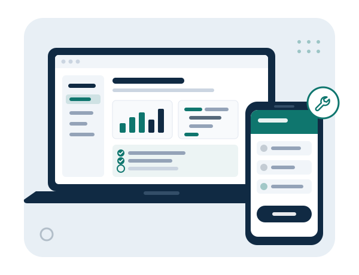

01 / DEVELOPMENT
Software Development
Mobile apps, web applications, and custom business software built around your requirements.
AMALTEK LLC · ESTABLISHED 2020
From planning and development to testing, deployment, and ongoing support. We help small businesses worldwide build and maintain websites, mobile apps, and business software.
A new idea. An existing application. A technical challenge.

WHAT WE DO
Get help with a complete project or a specific part of your technology journey.
01 / DEVELOPMENT
Mobile apps, web applications, and custom business software built around your requirements.
02 / WEB
Professional, responsive websites—from content and layout planning to development, launch, and ongoing updates.
03 / QUALITY
Identify issues before they affect your customers. Engage us for a testing project or QA professionals who work alongside your team.
04 / SUPPORT
Help investigating application errors, crashes, configuration issues, and software problems on Android-based devices.
HOW WE WORK
Understand your needs and define a practical scope.
Build the solution around your priorities.
Check quality and investigate issues.
Prepare and launch the agreed solution.
Maintain and troubleshoot as your needs evolve.
Each engagement is tailored to your needs, with delivery and ongoing support agreed in the project scope.
ABOUT AMALTEK
Established
Amaltek LLC provides software development, website development, quality assurance, technical consulting, and application support for small businesses worldwide.
We help businesses plan solutions, develop and test software, deploy applications, and support their technology after launch. Whether you are starting something new or improving an existing application, we can help you define the next step.
LET’S TALK
Have a development project, need testing support, or facing an application or Android-device issue? Email us with a brief description of your requirements.